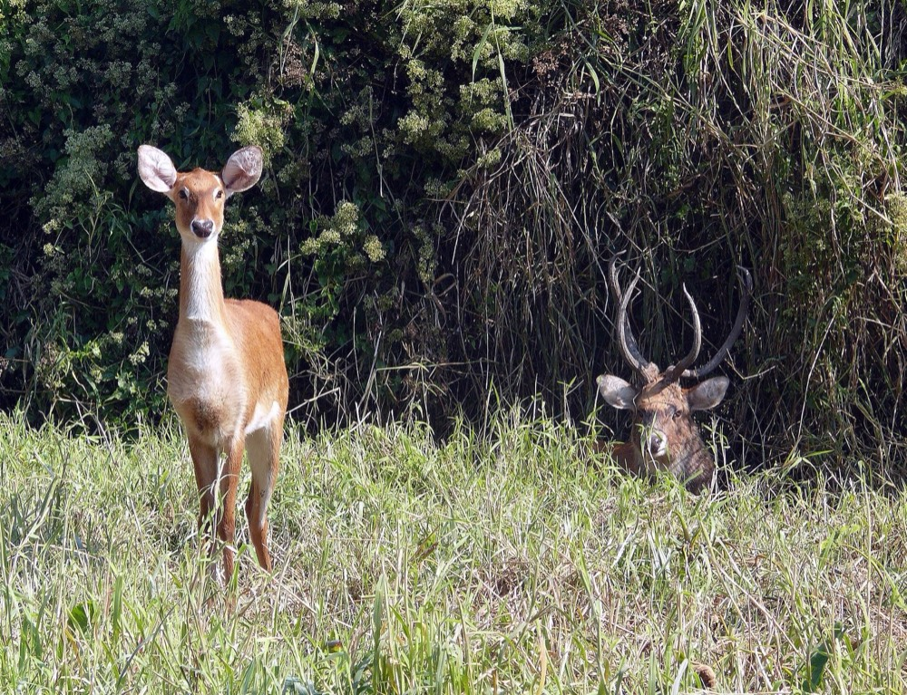
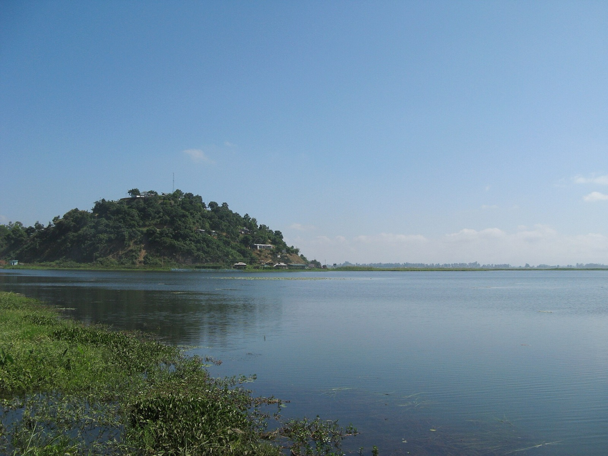

Discover the Sangai’s world
A deer that looks back, islands that float, and the land that holds them.

A comeback now slipping away
Brought back from near extinction in the 1950s, the Sangai grew to 260 by 2016. The 2026 census found only 172, as its floating home thins and deer drown where the phumdi gives way.

Independent monitoring by the Wildlife Institute of India paints an even starker picture: 91 Sangai in 2006, 76 in 2019 and 64 in 2023.
Manipur Forest Department counts. Sources: Wikipedia, Eastern Mirror (2026 census), India Wildlife News (WII figures), Down To Earth.
Loktak by the numbers

40 km²
of floating grassland in Keibul Lamjao
287 km²
typical area of Loktak Lake
1.2 m
the thickest phumdi
100,000
people living around the lake
Source: Wikipedia, Loktak Lake and Keibul Lamjao National Park.
Manipur’s state symbols
Five living emblems, with the Sangai at the head.
Source: Wikipedia, Manipur.

Help keep these stories alive
Invite us to your school, or support our work for the Sangai.
Get in touch